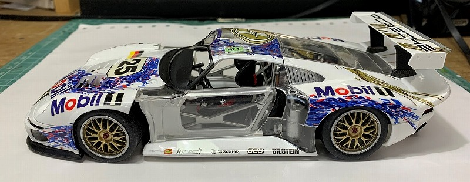

TAMIYA 1/24 Porsche 911 GT1 Full-View
ルマン24時間レースの1996年のシーズンに間に合わせるため、911ベースのグループGT1規定のグランドツーリング・スポーツカーとして開発されたマシン
フルビューボディを組み込んで確認 －１
シャシーを完成させ、フルビューボディを組み込んだ状態（右横から）。
コクピットがよく見えるように、ドア内張をくり貫いています。ミッションとエンジンを繋ぐ、連結棒も自作して繋げました。
運転席後方の耐熱ボードと、ロールバーが一体になっていたので、耐熱ボード部分をくり貫いて、エンジンが良く見えるようにしています。ここら辺がフルビュー作成の面白いところだと思います。
フルビューボディを組み込んで確認 －２
シャシーを完成させ、フルビューボディを組み込んだ状態（右前方から）。
コクピットからエンジンが観えますねぇ。
エンジンのオレンジ色の部分は、実は説明書通りの塗装ではありませんでした。ロールバーが完全に丸く成形できていないので、次回作製する機会があれば改善したいところでしょうか！
フルビューボディを組み込んで確認 －３
シャシーを完成させ、フルビューボディを組み込んだ状態（左前方から）。
実は、このフルビューモデルは、ボディの一部は透明ではありません（後方下 他）。なので、完成しても白いところは残ります。
それを活かしながら、どこを塗装するかも決めていきます。今回はデカールも貼りますし・・。
フルビューボディを組み込んで確認 －４
シャシーを完成させ、フルビューボディを組み込んだ状態（左横から）。
かっこいいですね！（自画自賛）
フルビューボディを組み込んで確認 －５
シャシーを完成させ、フルビューボディを組み込んだ状態（上から）。
前の後ろも結構スカスカですね・・。ここら辺は逆に観えなくして、想像を掻き立てたい部分です。
では、塗装してデカールを貼っていきます。
塗装してデカールを貼って確認 －１
このプラモデルを作製する時期は、ホームページに上げるなんて考えていなかったので、いきなりこんな画像になりました。
実はこのプラモデルを作製するのは２回目。１回目は１０年前（２０１０年）くらいかな・・。なので今回はデカールをたくさん貼ってみてどうなる？的な部分もありました。
「デカールは、未塗装部分には貼らない」というコンセプトで行いましたが、ルーフは貼ってますｗ。
塗装してデカールを貼って確認 －２
この写真のヘッドライトですが、何故かセピア色。これ、市販の状態です。どうして田宮さん？。塗装を前提に提供していないのでしょうかねぇ。
プラモデル自体、オークションで手に入れたものなので、経年でデカールが劣化しているようです。ゼッケンの白い部分がアイボリーっぽくなってます。残念です。
塗装してデカールを貼って確認 －３
「Mobil」のデカールは失敗しています。どこかわかりますか？
「Mobil」の o は、実は車体の真ん中にくるのが本当で、その o の中にポルシェのエンブレムを貼る仕様です。乾いた後に発覚したので、エンブレムは貼りませんでした。残念です。
他のサイトで確認したら、解決方法を記載しているのがありました。早く気付けば・・。
塗装してデカールを貼って確認 －４
サイドステップのデカールもこの幅にデカールを貼るのが難しかったです。このような平面部分に貼るデカールには、「マークセッター」等の軟化剤は使わないほうがいいですね。伸びますよね・・。伸びたら縮みませんし・・。
塗装してデカールを貼って確認 －５
塗装前、前も後ろも結構スカスカでしたが、塗装とデカールでカバーできています。
塗装してデカールを貼って確認 －６
リアビュー。きれいなラインですね。リアスポイラーの取付部分は、形状が複雑だったため、カーボン調デカールを使用しました。
塗装してデカールを貼って確認 －７
ど真ん中に貼るデカールは難しいですねｗ。牽引フックを基準に貼りましたが・・。
先代の 911 GT1 が、右上に写ってますね。ボケてますが・・。
塗装してデカールを貼って確認 －８
白塗装のルーフラインがきれいだと思いますが、どうでしようか・・。
塗装してデカールを貼って確認 －９
プラモデルの箱と同じ角度から１枚
塗装してデカールを貼って確認 －１０
運転席のルーフの未塗装部分にデカールを貼っていますが、この部分は研ぎ出しはしていません。何故か？
研ぎ出しで透明部分が曇る事を懸念したためです。ここら辺については不要パーツで実験が必要ですね！
塗装してデカールを貼って確認 －１１
エンジン見えます（自画自賛）。シートベルトも別売品を使用しています。
塗装してデカールを貼って確認 －１２
いいんじゃないでしょうか・・。
塗装してデカールを貼って確認 －１３
では、完成させましょう！
完成 －１
完成品です。これまでと異なるところは、ドア周りのパーツのみです。
完成 －２

横後方から
完成 －３
真横から
完成 －４
このプラモデル、ボディの一部はもともと透明ではない事は前に記載しました。
なので、透明パーツに塗装した部分の白と、白パーツに塗装した部分の白の色が微妙に違います。
塗装を厚くすると、透明部分との段差が大きくなると予想していた為の処置でしたが、今後の作製に生かしたいと思います。